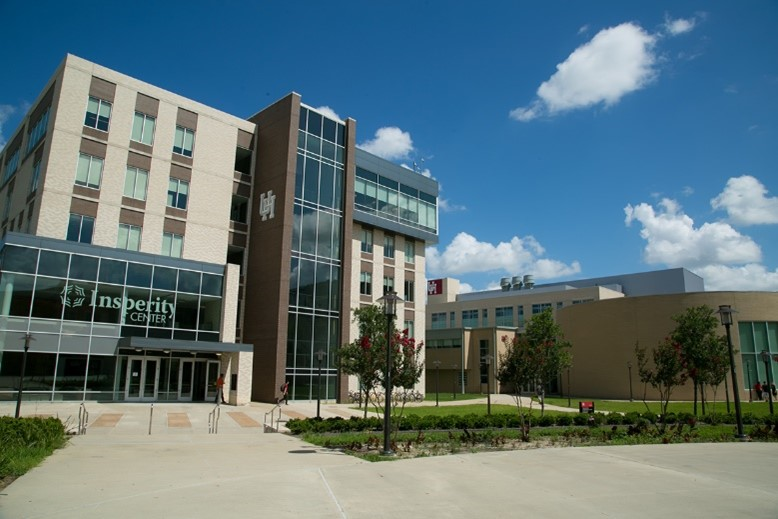
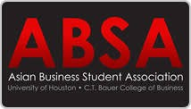
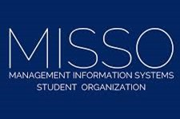

Le Fan
Master of Business Administration In MIS
About Me

Hi, I’m Le Fan, a graduate of the C. T. Bauer College of Business at the University of Houston, where I earned my Bachelor of Business Administration in Marketing and Management Information Systems and my Master of Science in Management Information Systems.
My background combines business, technology, data analytics, and communication. I am interested in using technology to solve business problems, improve decision-making, and turn complex information into clear, useful insights. Through my academic work and project experience, I have developed skills in data analysis, visualization, research, and technical problem-solving using tools such as Python, Java, JavaScript, R, SAS, ArcGIS Pro, Tableau, and Microsoft Excel.

During my undergraduate studies, I worked as the Research Lead for an Insperity corporate project through BUSI 3302: Connecting Bauer to Business. In this role, I helped conduct data-driven research on more than 150 students to better understand student motivations and recruitment preferences. I collaborated with a team of eight, analyzed survey responses, and helped translate the findings into useful insights for the project. This experience strengthened my ability to work with data, communicate findings, and approach business challenges from both an analytical and human-centered perspective.
I have also served as a Teaching Assistant for MIS and Business Analytics courses at the University of Houston. In these roles, I supported both face-to-face and online classes by grading assignments, exams, dashboards, analytics projects, and presentations. I also assisted students through office hours, discussion boards, and one-on-one support, especially with Tableau dashboards, data visualization, analytics concepts, and project troubleshooting. These experiences helped me become better at explaining technical topics clearly, giving constructive feedback, and helping others build confidence with data and technology.


Outside of the classroom, I developed leadership, mentoring, and professional engagement experience through the Asian Business Student Association, the Management Information Systems Student Organization, and the Bauer Undergraduate Center. As an active member of ABSA, I attended professional events, workshops, and networking opportunities that helped me grow my industry knowledge and career readiness. I was also recognized with the Most Active Member Scholarship and Community Service Scholarship. Through MISSO, I further expanded my interest in technology, business systems, analytics, and MIS-related career paths while connecting with peers and professionals in the field. As a Bauer Undergraduate Center mentor, I guided mentees with career advice, personal development, and campus involvement while helping create a supportive environment for students.
I am fluent in English and Mandarin Chinese, which has helped me connect with people from different backgrounds and communicate across cultures. Whether I am analyzing data, building dashboards, supporting students, or collaborating on projects, I enjoy finding ways to make information easier to understand and more useful for decision-making.
My goal is to continue growing at the intersection of business and technology, especially in roles that allow me to apply MIS, analytics, and problem-solving skills to create practical impact.